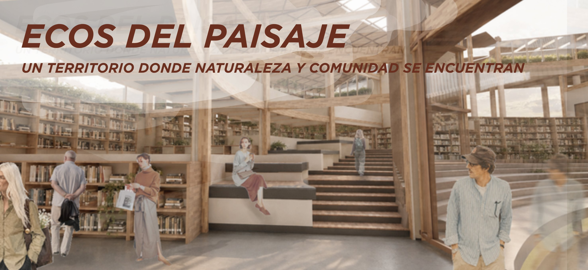

Proyecto VII · Urbanismo V · Estructuras IV
Ecos del Paisaje
Un equipamiento ambiental e intergeneracional en el borde de Villatina, Medellín.
- Estudiantes
- Sebastián Díaz Aguilera
Ana Sofía Sanmartín Betancur - Lugar
- Villatina – Campo Santo
6,22° N · 1.850 msnm - Semestre
- 2026-2
Universidad Santo Tomás

La idea
Un borde protegido solo en el papel queda sin dueño y se invade. Proponemos un borde con peso: el paisaje como infraestructura social y espacial, donde las huertas, los patios y los senderos entran al edificio y lo vuelven parte de la ladera.
Recorrido44 s · del acceso al espejo de agua
Contenido
Ocho láminas
- 01Análisis del lugarUrbanismo V · Lote y norma
- 02Análisis demográficoUsuarios y ejes del programa
- 03BioclimáticaClima y estrategias pasivas
- 04Concepto arquitectónicoIdea proyectual
- 05Programa arquitectónicoUsos, volumetrías y plantas
- 06Circulación y accesosRecorrido y secuencia espacial
- 07Desarrollo técnicoSecciones y detalle constructivo
- 08Sistema estructuralEstructuras IV · Cubiertas y cuantificación
Urbanismo V · Lote y norma
Análisis del lugar
Un borde urbano-rural bajo presión. Concentramos lo construido en la franja estable y dejamos la ladera verde: un límite físico que la protege mejor que un borde vacío.
El lote está en el polígono SE-API-05, reservado para equipamientos, espacio público y áreas ambientales. Proponemos un parágrafo para el Art. 126 del Decreto 409: superar el índice rural si la ocupación se concentra en terreno estable y ladera arriba solo quedan huertas, senderos y miradores.
- 12.889m²
- área del lote
- 17
- manzanas analizadas
- 8–10min
- a la estación Las Torres
Usuarios y ejes del programa
Análisis demográfico
Una comunidad joven que envejecerá en el mismo barrio. Por eso el equipamiento es intergeneracional y se ordena en cuatro ejes.
Contamos manzana por manzana: 1.230 personas de 0 a 19 años, 1.276 de 20 a 39 y 845 de 40 a 69. La memoria ocupa el centro del programa (30 %), junto a creación (30 %), ambiente y envejecimiento activo (25 %) y formación (15 %).
- 3.351
- usuarios potenciales
- 4
- ejes del programa
- 30%
- del programa para la memoria
Clima y estrategias pasivas
Bioclimática
El año es estable, pero el día oscila mucho. El edificio guarda el calor del día en su masa, filtra el sol con la cubierta y recoge la lluvia para las huertas.
Corregimos los datos de la estación Olaya Herrera a la altura del lote, unos 1.850 msnm: la media baja a 19,4 °C y el 43 % de las horas está por debajo de 18 °C, casi todas de noche. Ventilación cruzada y por chimenea, aleros de 1,4 m al sur y luz cenital difusa completan la estrategia.
- 11°C
- de oscilación diaria
- 2.240mm
- de lluvia al año
- 67%
- de horas de uso en confort
Idea proyectual
Concepto arquitectónico
El paisaje como infraestructura social y espacial: huertas, patios y jardines entran al edificio y lo vuelven parte de la ladera.
Queríamos un entorno donde envejecer estuviera acompañado por la naturaleza: patios, jardines, huertas y recorridos contemplativos para caminar, descansar, observar, cultivar y encontrarse. La vegetación se siembra en cuatro estratos para proteger la ladera.
- 4
- estratos vegetales
- 1
- espejo de agua-memoria

Usos, volumetrías y plantas
Programa arquitectónico
Cuatro volumetrías siguen la topografía y reparten los usos en un solo sistema de patios.
Volumetría 1: biblioteca y sala de exposiciones. Volumetría 2: Jardín Buen Crecer y talleres de agricultura, carpintería y artes, conectados con las huertas públicas. Volumetrías 3 y 4: comercio, restaurante, gradas, termas, vivero y mirador.
- 4
- volumetrías
- 8
- usos en la convención
- 1:200
- escala de las plantas
Recorrido y secuencia espacial
Circulación y accesos
Un recorrido continuo en terrazas abraza el conjunto y va de lo más activo a lo más tranquilo.
Se entra desde el barrio, desde la parte alta en bicicleta y desde la zona deportiva. La secuencia: accesos, comercio, zona deportiva, talleres, transición, cultura y memoria, espejo de agua, huertas y jardines, vivero y mirador.
- 3
- accesos
- 9
- estaciones en la secuencia
Secciones y detalle constructivo
Desarrollo técnico
Los niveles siguen la ladera: espacio público abajo, huertas en la mitad, talleres más arriba y el mirador en lo alto.
El detalle de la biblioteca se resuelve en cinco capas: viguetas de cubierta en madera, vigas de amarre metálicas, muro de contención que trabaja como masa térmica, losa de cimentación y pilotes que llevan el edificio a suelo firme y dejan el piso ventilado.
- 7m
- de profundidad de pilotes
- 5
- capas en el detalle

Estructuras IV · Cubiertas y cuantificación
Sistema estructural
Una cubierta curva de casetones de madera que da sombra al sol casi vertical y lleva el agua lluvia a las huertas.
Casetones de 0,50 × 1,20 m sobre viguetas de glulam, vigas y columnas metálicas. Una franja de glulam con claraboyas se apoya en el muro de contención existente y un domo seccionado en madera lleva malla de sombra.
- 1.399m²
- de cubierta en madera
- 140,7t
- de estructura metálica
- 9.516M
- presupuesto estimado (COP)
Renders
El proyecto habitado
01 / 06
01 Plaza de accesoBajo la pérgola curva de madera 02 Espejo de aguaLa memoria al centro del conjunto 03 Vista aéreaLos volúmenes abrazan la plaza 04 BibliotecaGradas para leer y vista al patio 05 Aulas habitadasTerrazas de madera bajo los casetones 06 AulasCelosías inclinadas y lucernarios
Entregas
Planchas finales
Cuatro planchas de 70 × 100 cm, tres láminas de urbanismo, seis plantas a escala 1:200 y los planos estructurales.
Ver todos los planos- 01 · Lugar, programa y secciones
- 02 · Espacio público e imaginario
- 03 · Detalle e isométrico
- 04 · Detalle, versión final